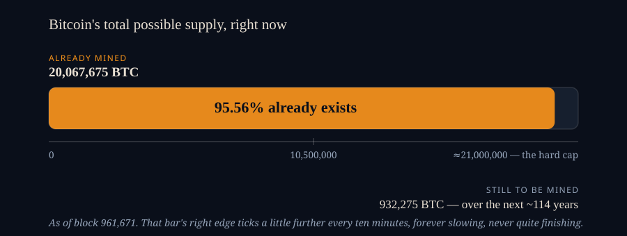
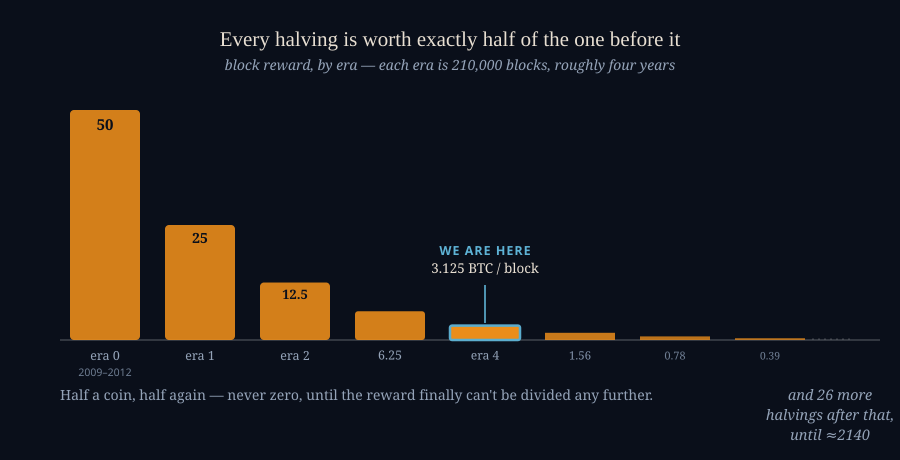

How Many Bitcoins Are There, Exactly?
AUGUST 8, 2026
At block 961,671 — the moment I'm writing this — exactly 20,067,675 bitcoin exist. Not an estimate, not a number lifted off a market-data vendor's dashboard: an exact count, derived from a rule written into the software the week it started running, reproducible by anyone with an internet connection in about the time it takes to open a calculator. This publication keeps a standing board of the biggest assets in the world, and Bitcoin's line on it uses exactly this number. Gold's line on that same board is a genuine estimate. Silver's is a softer one still. Bitcoin's, it turns out, isn't a guess at all — and once I'd actually worked through why, I liked the answer enough to write it down.
A Rule, Not a Guess
New bitcoin enters existence exactly one way: a "coinbase" reward, paid to whoever successfully mines each new block. That reward started at 50 BTC per block in January 2009 and is cut exactly in half every 210,000 blocks — roughly every four years, an event everyone calls "the halving." The schedule isn't a policy someone could quietly change; it's enforced by every full node on the network, and a miner who tried paying themselves more than the rule allows would have that entire block rejected by everyone else running the software. That's the whole trick. You don't need to survey a vault or trust an issuer's annual disclosure, the way you would for gold or a company's share count. You only need to know how many blocks have been mined — which is public, sequential, and has been since block zero — and do the arithmetic.

Run that arithmetic at today's height and you get 20,067,675 BTC — 95.56% of everything Bitcoin will ever produce. What's left, about 932,275 coins, arrives at a rate that keeps shrinking: right now a block pays 3.125 BTC, one gets mined roughly every ten minutes, so a little under 450 new bitcoin enter the world on an average day. That drops to about 225 a day at the next halving, expected around block 1,050,000 — roughly 88,000 blocks and twenty months from where the chain sits as I write this.
The Number That Isn't Quite Twenty-One Million
The "21 million" figure everyone quotes is a round stand-in for something more precise, and slightly stranger than I'd realized. Each halving isn't a smooth curve toward zero — it's integer division, so eventually the reward can't be cut in half again without rounding to nothing at all. That happens at the thirty-third halving, block 6,930,000, expected around October 2140. From that block on, mining pays no new bitcoin whatsoever — only whatever transaction fees happen to be attached — forever. Add up every reward from the very first block to the last one that will ever pay anything, and you land on 20,999,999.9769 BTC, the number that shows up almost everywhere this gets quoted.

Except that number is very slightly wrong, in a way that surprised me when I actually checked it rather than just repeating it. Block zero — the genesis block, mined by Satoshi Nakamoto on January 3rd, 2009 — nominally paid the standard 50 BTC reward like any other block. But due to a quirk in Bitcoin's original code, that specific coinbase transaction was never added to the network's spendable ledger. Every node that has ever run Bitcoin excludes it by construction, and no wallet anywhere, run by anyone, can produce a valid transaction spending it — see the Bitcoin Wiki's own account of it. Those 50 coins exist in the reward schedule but not in the actual supply; they're a rounding error nobody rounds away. Subtract them, and the true spendable maximum is 20,999,949.9769 BTC — fifty short of the figure quoted almost everywhere else, including, until I ran this myself, in my own head.
Check My Math
None of this should be taken on my word, which is rather the point of a page called a ledger. Any major block explorer — mempool. space, blockchain.info, blockstream.info — will hand you the current block height for free, with no account and no key; it's usually the first number on the page. Take that height, apply the rule above (50 BTC for blocks 1 through 209,999, 25 for the next 210,000, 12.5 for the 210,000 after that, halving every era, block zero excluded per the note above), and you'll land on the same figure this page did. It won't be the exact same figure — roughly six new blocks get mined every hour, so by the time you're reading this the true count has already ticked up a little further. That's not a flaw in the arithmetic. It's the whole point of it: the number is exact for a given moment, and the moment keeps moving.
What Isn't Exact
Total supply is exact. How much of it anyone can actually still reach is a different question, and nobody knows the answer to that one for certain. A meaningful share of those twenty million-plus coins sits behind a key nobody can produce anymore — a forgotten password, a private key that only ever existed in one person's memory, or, in the case that made the most headlines, a hard drive thrown in the trash. A Welsh IT engineer named James Howells mined roughly 8,000 BTC on a laptop in 2009 and, in the middle of a 2013 house-clearing, accidentally sent the hard drive holding it to a landfill in Newport. He has spent over a decade since trying, unsuccessfully, to get permission to dig it back out — see the whole saga, well documented. Those coins are still counted in the 20,067,675 above; nothing about losing the key changes what was validly mined. They're just, as far as anyone can tell, gone.
A dormant address looks identical whether its owner lost the key yesterday or simply hasn't spent anything in ten years, which is exactly what makes "how much is actually lost" impossible to read off the chain the way total supply is. The most-cited attempt at an answer is a 2017 Chainalysis study, reported widely at the time, estimating that somewhere between 2.78 million and 3.79 million bitcoin were already permanently unreachable — 17 to 23 percent of the supply that existed then — using patterns of age and inactivity rather than anything provable (Fortune's coverage). It's a widely repeated number and a genuinely soft one; treat the range, not either end of it, as the honest answer.
One case gets its own line, because of its size. On-chain analysis — the "Patoshi pattern," named for and largely credited to the researcher Sergio Demian Lerner — has identified roughly 1.1 million BTC, mined across Bitcoin's first two years, that has never moved since mining stopped around late 2010. It's believed, on strong circumstantial grounds but with no cryptographic proof anyone has produced, to belong to Satoshi Nakamoto personally (one detailed writeup on the analysis). If that attribution holds, something like one bitcoin in eighteen that will ever exist has sat untouched since before most of today's exchanges were founded.
What stays with me, having written this next to a board that has to guess at how many tonnes of gold humanity has ever pulled out of the ground, is how rare Bitcoin's situation actually is. Most of what gets valued in the world can't be counted exactly — it can only be surveyed, reported, or estimated, and taken mostly on faith. This is the one line on that board where the faith isn't required.